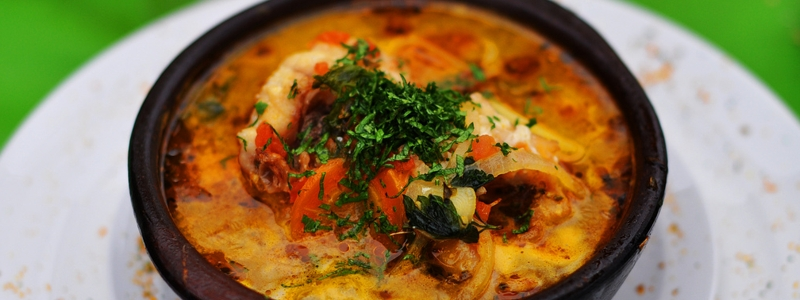
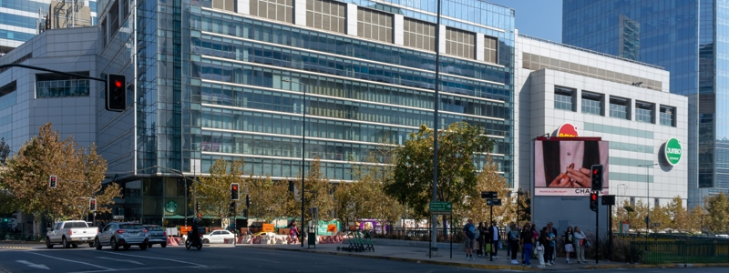

¿Qué comer?
Turismo Gastronómico
En esta sección encontrarás las raíces y tradiciones que nutren los corazones de nuestro país. Te invitamos a descubrir los sabores de Chile de norte a sur y a deleitarte con las variadas cocinas de la gastronomía nacional.
Ver más
¿Qué hacer?
Cultura y Patrimonio
Conoce más de nuestros pueblos originarios o revive hazañas y hitos de nuestro país, en los museos y barrios históricos a lo largo de todo Chile.
Ver más

¿Dónde ir?
Vida Urbana
Casinos de juegos, centros comerciales y una vibrante vida nocturna es lo que regala cada una de las ciudades de Chile a los amantes del turismo urbano. ¡Compruébalo tú mismo!
Ver más